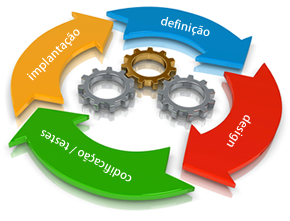

Analise de Sistemas II
Prof. Rogério Fontes
professorrogeriofontes@gmail.com
Mini bio
Conceito de Análise de sistema:
A Análise de Sistemas consiste nos métodos e técnicas de investigação e especificação da solução de problemas, a partir dos requisitos levantados, para criação e implementação de software em algum meio que o suporte.
Conceito de Sistemas:
Define-se sistema como um “conjunto de elementos interrelacionados que possuem características comuns e que podem ser entendidos como um todo”.
Conceito de Sistemas:
Os sistemas são divididos em duas categorias:
- Naturais
- Feitos pelo homem
Naturais
A maioria dos sistemas não é feitos pelo homem, e sim encontrados na natureza e com propósito próprio.
São basicamente:
- Sistemas físicos: sistemas estrelares, geológicos, etc.
- Sistemas vivos: sistema reprodutor, ingestor, etc.
Feitos pelo homem
Alguns são construídos, organizados e mantidos por seres humanos.
Entre eles podemos considerar:
- Sistemas sociais: organização de leis, etc.
- Sistemas de transporte: redes rodoviárias, etc.
- Sistemas de comunicação: telefone, telex, etc.
- Sistemas de manufatura: Linhas de montagem, etc.
- Sistemas financeiros: Fluxo de Caixa, etc.
Sistemas Automatizados
Hoje em dia, muitos desses sistemas não funcionariam sem computadores, mesmo que eles já existiam muito antes
do computador.
Entre eles podemos considerar:
- Hardware – UCP, Periféricos, Memória, etc.
- Software – Sistemas Operacionais, Programas de Sistemas, Banco de Dados.
Sistemas Automatizados
Outros:
- Programas de Controle de Telecomunicação, etc.
- Pessoas – operadores do sistema, que fornecem as entradas e utilizam as saídas.
- Dados – informações que o sistema conserva por um período de tempo.
Processo de desenvolvimento de Software
Processo de desenvolvimento de Software
Equipe de desenvolvimento:
A equipe de desenvolvimento é o conjunto de pessoas responsáveis por construir o software. Dela fazem parte pessoas com diferentes habilidades. Em sistemas de informações tradicionais teremos gerentes de desenvolvimento, analistas, projetistas, programadores, administradores de banco de dados, etc.
Processo de desenvolvimento de Software
Analista de sistemas:
- Identificar os objetivos do sistema, conhecendo os resultados que se pretende alcançar.
- Efetuar um levantamento prévio dos requisitos para a análise do sistema.
Processo de desenvolvimento de Software
Analista de sistemas:
- Criar modelos que representem o sistema, para facilitar a análise do mesmo.
- Encontrar soluções alternativas para alcançar os objetivos.
- Definir critérios de avaliação.
"Ferramentas" para Analise de sofware
- O Paradigma da Orientação a Objeto.
- Modelagem de Sistemas - UML.
O Paradigma da Orientação a Objeto
O paradigma da orientação a objetos visualiza um sistema de software como uma coleção de agentes interconectados chamados objetos. Cada objeto é responsável por realizar tarefas específicas. É através da interação entre objetos que uma tarefa computacional é realizada.
Classes e Objetos
Focamos alguns princípios da orientação a objetos:
- Qualquer coisa é um objeto.
- Objetos realizam tarefas através da requisição de serviços a outros objetos.
- Cada objeto pertence a uma determinada classe. Uma classe agrupa objetos similares.
- A classe é um repositório para comportamento associado ao objeto.
- Classes são organizadas em hierarquias.